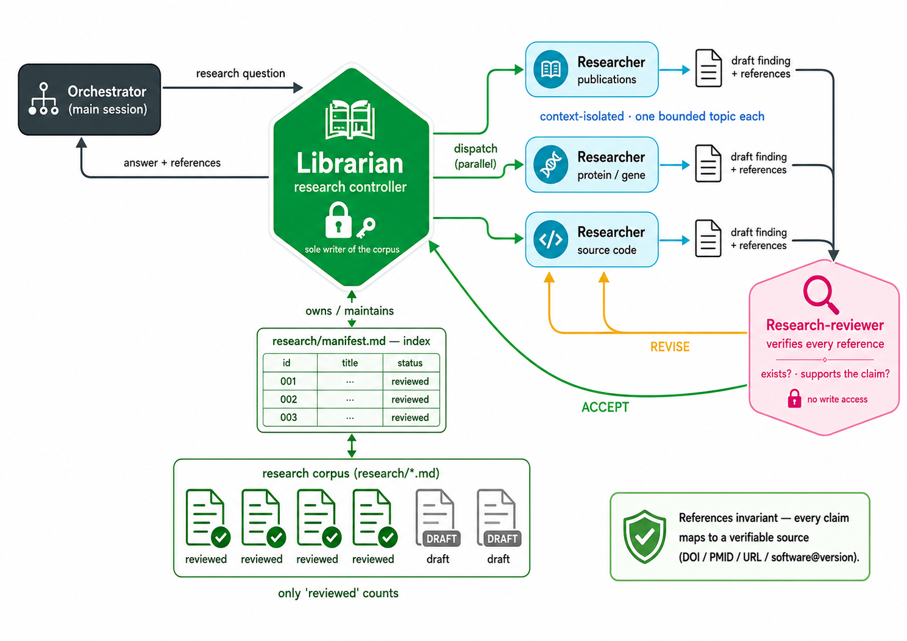

Grounded research
The librarian & researchers
The librarian dispatches parallel, context-isolated researchers; a research-reviewer verifies every reference before it can enter the corpus.

The librarian dispatches parallel, context-isolated researchers; a research-reviewer verifies every reference before it can enter the corpus.
